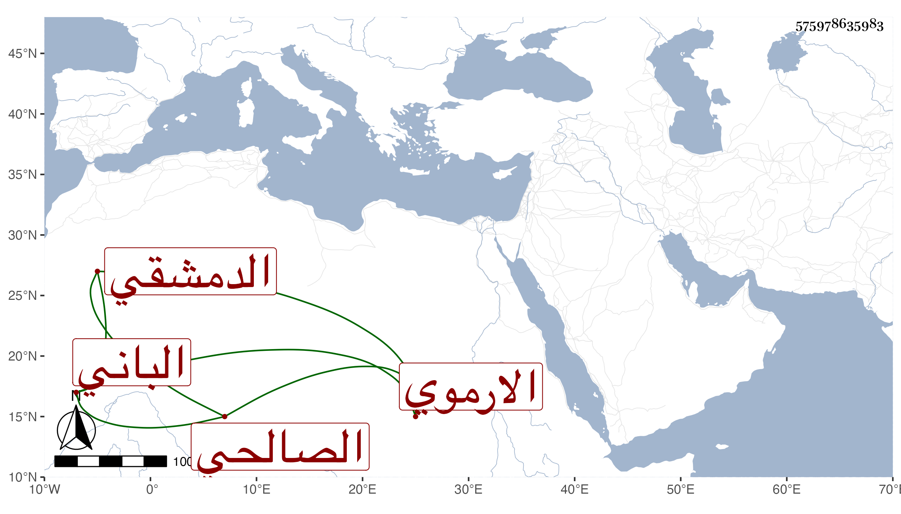

0902Sakhawi.DawLamic.ITO20230111-ara1.EIS1600.575978635983
Biography ID: 575978635983
680
عبد القادر الباني بن إبراهيم بن محمد بن إبراهيم بن عبد الله بن يوسف الصلاح بن الزكي الارموي الأصل الدمشقي الصالحي سبط الشهاب أحمد بن السيف محمد بن أحمد بن أبي عمر . ولد في سنة خمس وثلاثين وسبعمائة وأحضر على جده لأمه وزينب ابنة الكمال والمزي والبرزالي ومحمد بن أحمد بن تمام وأبي بكر بن محمد بن الرضى ومحمد بن يوسف بن دوالة ومحمد بن أبي الزهر الغسولي ومحمد بن أبي بكر بن أحمد بن عبد الدائم وأحمد بن محمد بن حازم المقدسي في آخرين منهم زينب ابنة ابن الخباز وست العرب ابنة أحمد بن البدر على المقدسية وحبيبة ابنة العز إبراهيم بن عبد الله بن أبي عمر وأسمع على أختها فاطمة ابنة العز ومما سمعه عليها نسخة أبي مسهر وجزء أيوب والمبعث لهشام بن عمار ومما حضره على أبيه الكمال موافقاتها وعلى جميع من ذكر إلا ابن الرضى وابن حازم وست العرب مع تتمة أربعة وعشرين شيخا وجزء ابن عرفة ، وحدث بالكثير قرأ عليه شيخنا وابن موسى المراكشي وسمع رفيقه الموفق الأبي والشهاب بن زيد وعمر وتفرد . مات في شوال سنة أربع وعشرين وكان من بيت خير وصلاح ، وذكره المقريزي في عقوده رحمه الله وإيانا .
